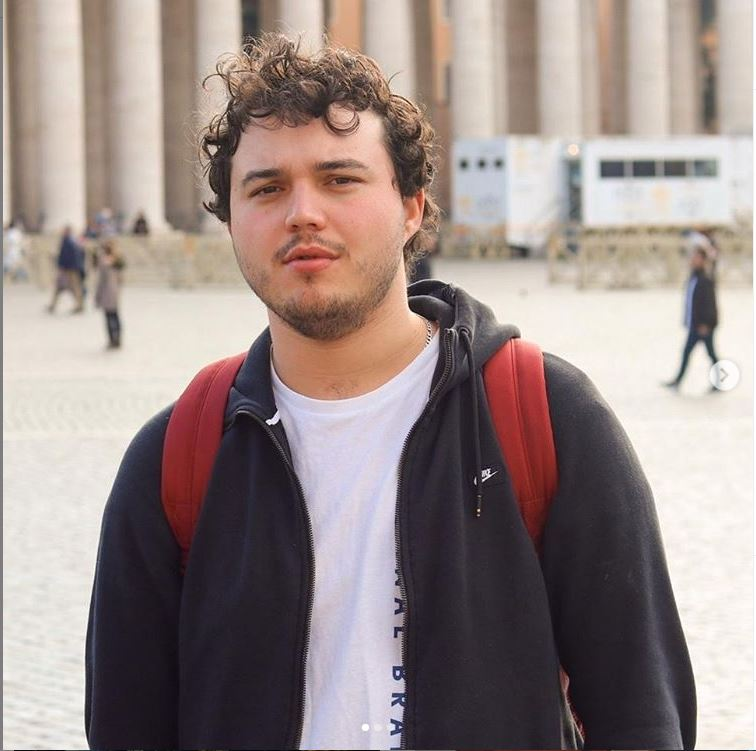

My report page in the course 1DV525

This is my report-page in the course. This page contains a presentation of myself. Keep this site updated all through the course and hand it in, as part of the final grading, with each assignment and at the end of the course.
So, a presentation might be in order. I'll begin.
My name is Loic, borned and raised in France in Lyon. I used to train Judo for about 10 years. Did a bit of basketball and tennis in my childhood. Nowadays, I really like biking, finding new trails, dicovering new spots. I have been working as a Material Controller in Volvo for few summers now. I worked as an animator in a event with the Judo club back in France. I moved to Sweden 5 years ago now, because my dad found a job here and the whole familly moved. Now, my parents and brothers went back to France. My hobbies are biking, cooking.
I was always interested by computers and how they work. Which gave me the tittle of IT support by my parents.
//Loic